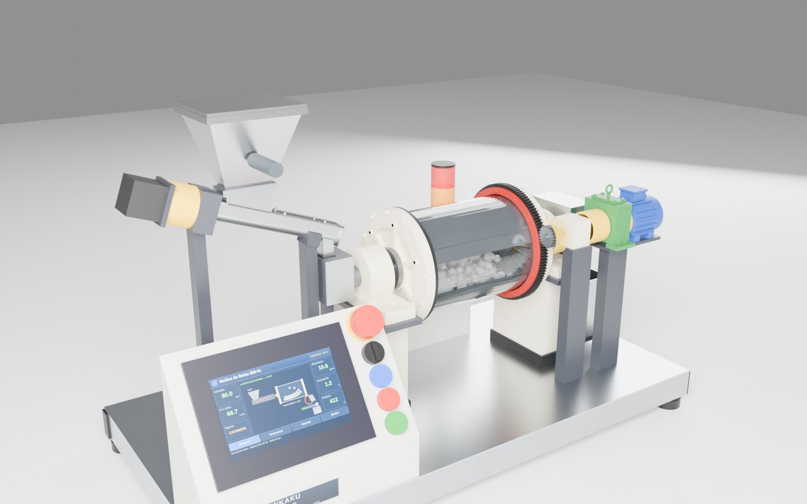
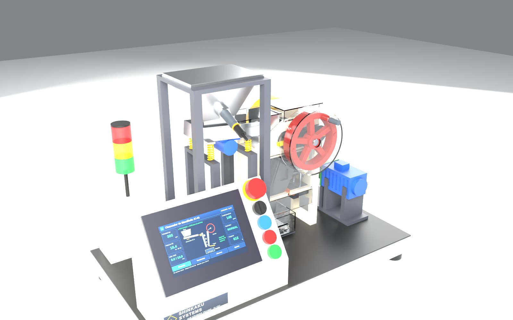
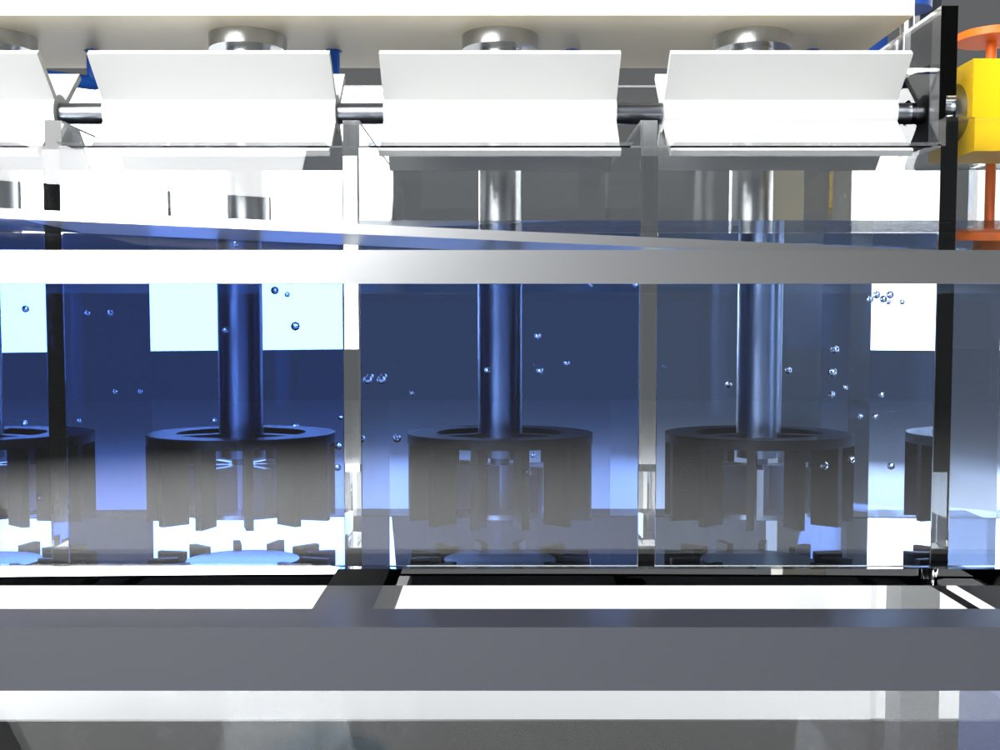
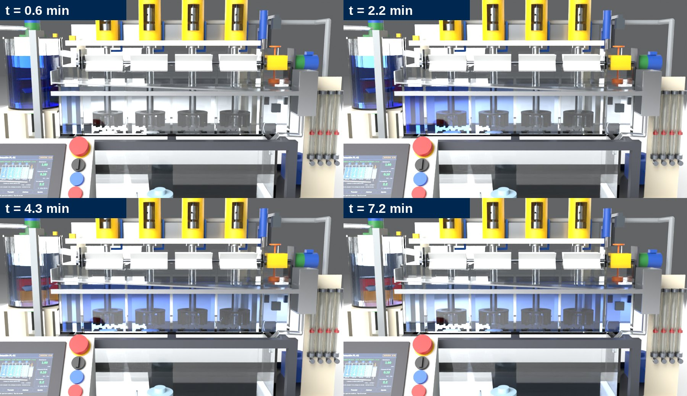
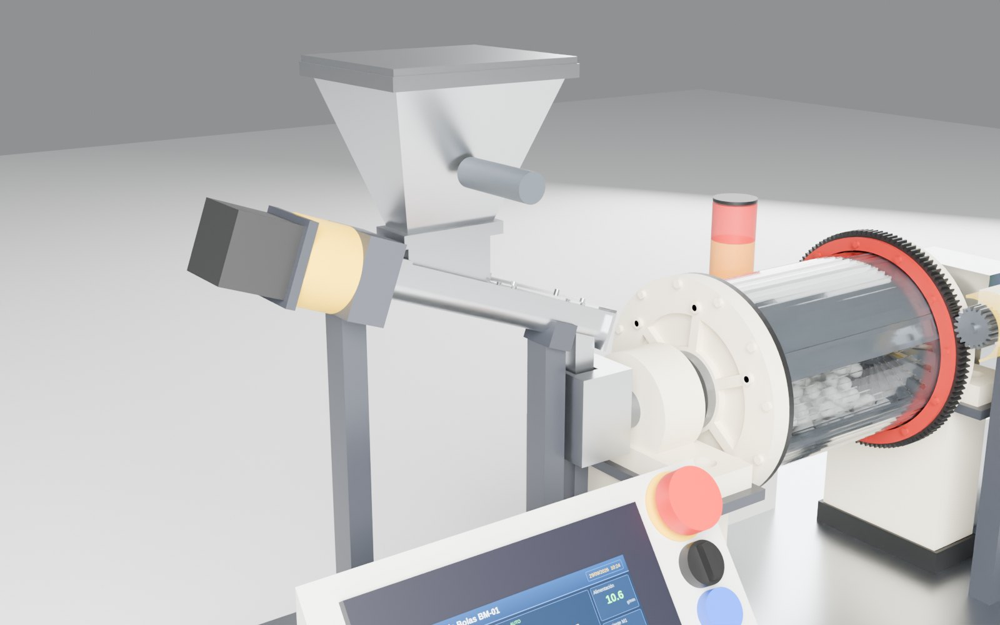
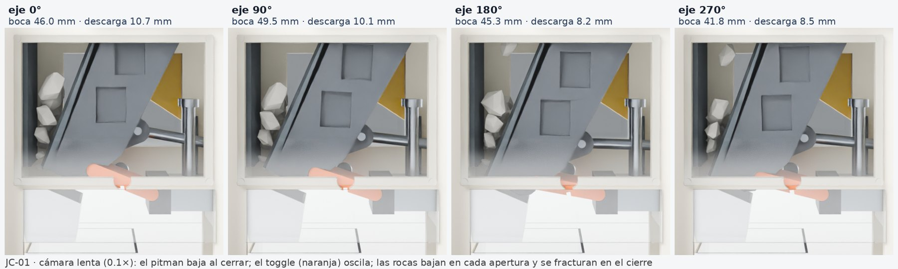

Renders de ingeniería
Galería
Imágenes renderizadas directamente desde el modelo CAD de cada maqueta.








Iniciando planta…
Maquetas didácticas que funcionan de verdad: chancan, muelen y flotan con mecánica real, sensores, HMI y control automático. Diseñadas para universidades, institutos técnicos y centros de capacitación.
Cada maqueta reproduce una etapa real del procesamiento de minerales. Juntas forman la línea completa: reducción de tamaño, liberación y separación. Haz clic en una etapa para ir a su maqueta.
Un mecanismo de 4 barras real (excéntrica + pitman + toggle) tritura rocas de verdad. La simulación usa exactamente la misma cinemática que el CAD.
El chancador primario recibe el mineral de la mina (hasta 1–1.5 m) y lo reduce a ~150–250 mm. La mandíbula móvil se acerca y se aleja de la fija; la roca se fractura por compresión y baja por gravedad a medida que cabe en la abertura.
Tambor transparente con 650 bolas, corona y piñón reales y alimentador de sinfín. Cambia la velocidad y observa cómo la carga pasa de cascada a catarata y a centrifugado.
El molino de bolas reduce el producto chancado a menos de ~0.2 mm para liberar las partículas de mineral valioso. Las bolas de acero suben con la pared del tambor y caen sobre la carga: impacto y abrasión.
Cuatro celdas transparentes que funcionan sólo con agua: rotores girando, aire real con burbujas, nivel controlado por un PI con válvula dardo y un pulso de colorante que recorre el banco.
En la flotación, burbujas de aire atrapan las partículas de mineral valioso (hidrofóbicas) y las llevan a la espuma, que rebalsa como concentrado. Las colas pasan de celda en celda. El nivel de pulpa es la variable de control principal.
Todas las maquetas comparten la misma arquitectura: se aprende una vez y se aplica en toda la línea.
Rodamientos, ejes, engranajes calculados y acoplamientos reales. CAD paramétrico, cero interferencias verificadas y piezas impresas en 3D.
ESP32 + HMI táctil 7": modo manual y automático, secuencias, alarmas e interlocks. Modbus RTU/TCP para conectar un PLC Mitsubishi, Siemens u otro.
24 V DC SELV, guardas enclavadas, parada de emergencia de doble canal, baliza y electrónica fuera de la zona húmeda.
Cada maqueta tiene su modelo 3D animado con la misma física del equipo: para clases remotas, preparación de laboratorios y esta web.
Imágenes renderizadas directamente desde el modelo CAD de cada maqueta.






Pesómetro, detector de desalineamiento, pull-cord y arranque secuencial.
Tanques acoplados, lazos PID y sintonía en cascada.
Dosificación, pH, temperatura y mezcla en línea.
Espesador y la línea integrada con SCADA.
Maquetas a medida, capacitación y material docente en español, inglés y japonés.